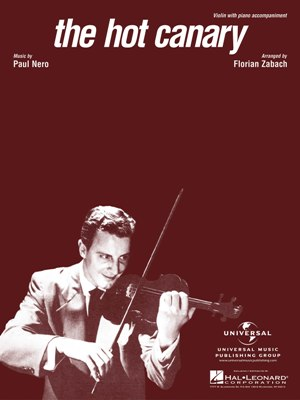

Exploring the Piazza dell’Arte: Florian ZaBach
In our continuing series exploring the lives and works of the artists featured on the Piazza dell’Arte at Scranton’s Courthouse Square, we will profile violinist and conductor Florian ZaBach.
ZaBach, who would come to be known as “The Poet of the Violin,” studied music and learned to play the violin as a child with his father Florian ZaBach Sr., who was a clarinetist with the Vienna Philharmonic, at the Chicago Cosmopolitan Conservatory of Music.
He debuted with the Chicago Symphony orchestra at the age of 12 playing the Mendelssohn concerto before moving on to the Prague Conservatory in Czechoslovakia to study violin.
Returning to the United States, ZaBach joined the music staff of Chicago’s NBC and WGN radio stations. Later, while performing at the Mayflower Hotel in Washington, D.C., he was discovered television star Arthur Godfrey who featured ZaBach on his show. His appearances on Godfrey’s show led to spots on the most popular television shows of the era including Ed Sullivan, Milton Berle, Ken Murray, Red Skelton, Steve Allen, Jack Parr and 25 appearances on the Tonight Show, often playing his showpiece number “The Hot Canary.” “The Hot Canary” was ZaBach’s most famous recording and would become a million-seller for Decca in 1951 and would reach the top 15 on the pop charts.
He would go on to become a regular on the variety program Club Embassy (1952-53) before moving to Hollywood to star in his own show “The Florian ZaBach Show” (1954) with the “pixie ballerina,” Mary Ellen Terry. For his work on television, ZaBach has a star on the Hollywood Walk of Fame.
ZaBach’s stamina and speed were legendary. For over a year he performed five one-hour shows daily, seven days a week as master of ceremonies, orchestra conductor and violin soloist on the stage of Strand Theatre on Broadway. He could play 1,280 notes of “Hora Staccato” in 100 seconds. “Believe It or Not” said of ZaBach’s performance of “The Flight of the Bumblebee,” “he plays 12.8 notes per second … faster than any known violinist in history.”
During most of his career, ZaBach violin of choice was his 1732 Guarnerius del Gesu, created in Cremona, Italy. He performed with major symphony orchestras as a soloist and conductor around the United States, as well as London, Vienna, Genoa, Venice, Australia and Beijing. ZaBach recorded dozens of albums for Mercury and Decca in his lifetime.
He spent the later years of his life living in Clarks Summit and died at the age of 87 in Scranton on February 25, 2006.
Spiritual Heir: Lawrence Loh. Like ZaBach, Loh is a transplant to the Greater Scranton area having been born in Southern California and raised in Carlisle. And also like ZaBach, Loh has made a significant impact on the area’s cultural landscape as Music Director of the Northeastern Pennsylvania Philharmonic. He was recently promoted to Resident Conductor of the Pittsburgh Symphony Orchestra but remains actively involved in the Northeastern Pennsylvania Philharmonic, helping it become one of the finest regional orchestras in the country and attracting renowned artists like André Watts, Anne Akiko Meyers, Jon Nakamatsu, Zuill Bailey and Sharon Isbin.
This article was part of a series that explored the lives and legacies of the artists featured on the Piazza dell’Arte at Courthouse Square, Scranton. It first appeared on Electric City Renaissance. Read the rest of the series.